The main impact of a 200 basis-point (2.00 percentage-point) rise in United States interest rates on Malaysia is a 0.05% drop in GDP by the 11th quarter — a limited spillover. Malaysia sits in the minimal band, ranked 11th by absolute GDP effect across the countries in this run, and the shape of the response is a slow build rather than a sharp break. GDP is essentially untouched at the start (down 0.0016% in Q1), then grinds lower through the first year, reaching −0.0086% by Q4, −0.0394% by Q8, and its trough of −0.0544% in Q11. From there it recovers only partially: by Q20 the level is still 0.016% below baseline. There is no sign change in the GDP path, so the model never produces a Malaysian output gain from this shock — the spillover is persistent, not a temporary dip.
Demand and trade. Household consumption follows the same slow arc, bottoming at −0.0296% in Q12 and still −0.0101% below baseline in Q20; the consumer response is smaller than the GDP response, which tells you the drag is not primarily a household story. Private investment is the sharpest domestic mover: it falls 0.0391% in Q1, deepens to −0.1751% by Q9, and only crosses back above baseline in Q20 (+0.0043%), so the cost-of-capital channel does the heavy lifting early. Net exports — the trade balance, since this model does not split imports from exports — move the other way and are a genuine offset: the trade balance improves 0.0583% in Q1, peaks at +0.1064% in Q8, and is still +0.0154% by Q20. Government spending barely moves, drifting up to +0.0056% at Q11 and back to +0.0009% by Q20, while government debt falls steadily to −0.052% by Q19 as the weaker activity path shrinks the debt stock relative to baseline.
External / FX. The real exchange rate — currency strength — appreciates, peaking at +0.3817% in Q8 and remaining +0.0859% above baseline at Q20. That is the mirror image of the net-export gain: a stronger real currency normally hurts competitiveness, yet here the trade balance improves anyway, because the dominant force is weaker domestic demand pulling in fewer imports rather than an export boom. The two series line up as a demand-compression story, not a competitiveness story.
Labour. Employment declines gradually, from zero in Q1 to −0.0346% at its Q15 trough, and is still −0.025% below baseline in Q20. Unemployment rises in parallel, peaking at +0.0118 percentage points in Q14 and easing only to +0.0070pp by Q20 — a small but durable loosening of the labour market. Real wages behave unusually: they rise to +0.0795% by Q10 before fading, turning negative at Q19 and ending −0.0224% below baseline in Q20. The early real-wage gain reflects falling inflation outpacing falling nominal pay; by the end of the horizon that advantage has reversed.
Prices. CPI inflation jumps +0.0638 percentage points in Q1, fades through Q4, then turns negative from Q9 and ends −0.006pp below baseline in Q20. Domestic inflation shows the same pattern, peaking at +0.0447pp in Q1 and turning negative at Q9, ending −0.0042pp. Firms' marginal cost falls steadily to −0.0325% at Q11 and remains −0.0095% below baseline at Q20. The initial inflation bump is a pass-through effect; the later disinflation is the demand gap feeding through to prices.
Financial conditions. The local policy rate rises modestly at first, peaking at +0.0417pp in Q3, then turns negative from Q11 and ends −0.0293pp below baseline as the domestic slowdown dominates. Government yields are mixed: the 2-year yield edges up to +0.0369pp in Q2 before turning negative at Q8 and ending −0.0203pp; the 5-year yield turns negative as early as Q3 and bottoms at −0.0211pp in Q12; the 10-year yield falls throughout, reaching −0.0114pp at Q11 and −0.0057pp at Q20. Bond prices fall to −0.2154% at Q8, then recover strongly, turning positive at Q13 and ending +0.122% above baseline. Equity prices fall to −0.34% at Q8 and remain −0.0514% below baseline at Q20. Tobin's Q — the value of installed capital — drops to −0.1226% at Q9 and returns to +0.003% by Q20. House prices decline persistently, reaching −0.067% at Q17 and still −0.0624% below baseline at Q20. Bank credit contracts only marginally, to −0.0079% at Q17, and the lending spread widens by a trivial +0.0001pp — credit conditions barely tighten in this model.
Sectoral and capital. Manufacturing GDP takes the largest sectoral hit, −0.1196% at Q8, and is still −0.0252% below baseline at Q20. Services GDP falls less, to −0.0311% at Q11, ending −0.0092% below baseline. The capital stock erodes slowly, reaching −0.0091% at Q19 and staying there through Q20 — the investment slump leaves a small permanent dent in productive capacity.
Timing. The GDP hit is largest in Q11 at −0.0544% and has not faded by Q20, where it remains −0.016% below baseline. The peak is late and the recovery is incomplete, so this is a drawn-out spillover rather than a quick bounce.
Close. These are model impulse responses to a 200bp US rate shock, deviations from the model's own baseline — not forecasts of what Malaysia will do. They describe the conditional path implied by the model's transmission channels, and the minimal band reflects how little of the shock reaches Malaysia through them.
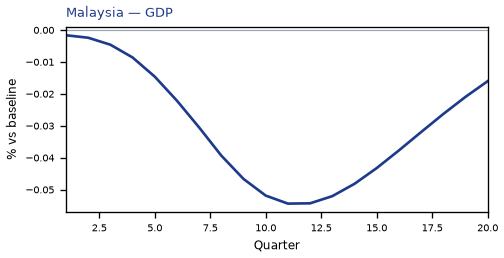
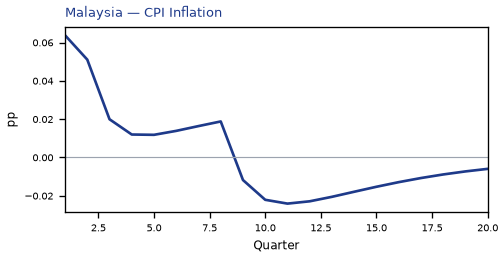
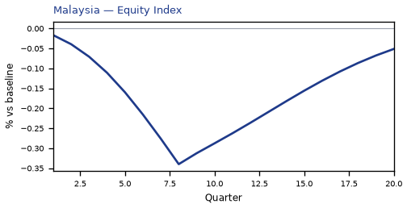
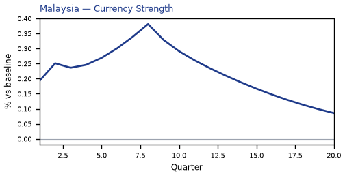
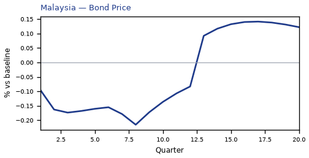
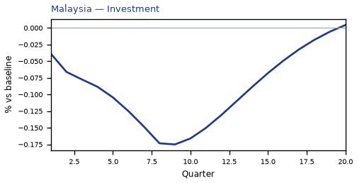
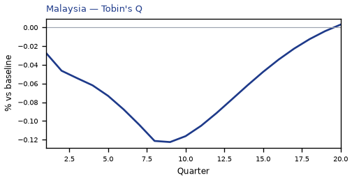
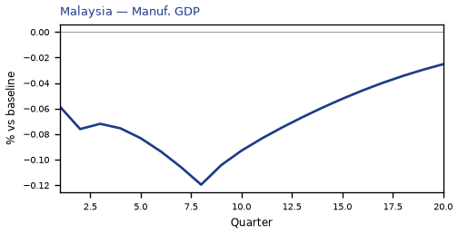
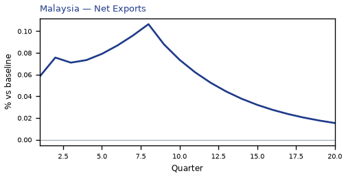
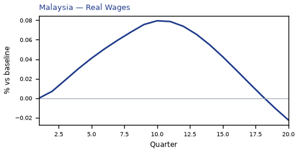
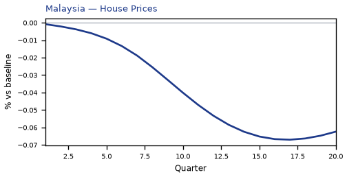
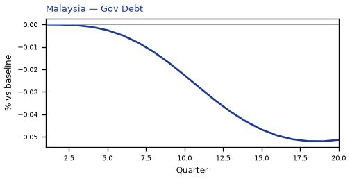
source=live · global_macro_v5 · contract v6 · Q1–Q20 JSON · not financial advice